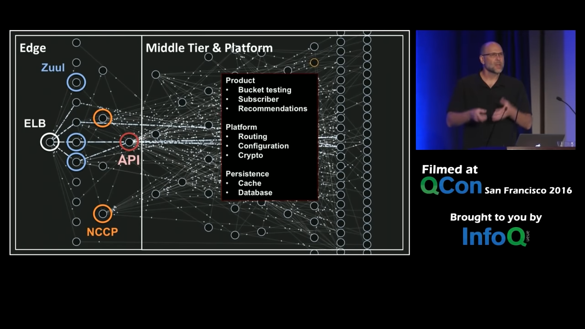

Microservice Architecture of Netflix
Table of Contents
1. Original Architecture
- 0:05:59 Orginally it was a load balancer in front of webserver running a single application, and a single database running on a single hardware
- Problem 1: The codebase was monolithic, so it was difficult to diagnose problem
- Problem 2: One Piece of Hardware running a single hardware. So, during peak seasons it was diffucult to vertically scale the application 0:07:08
- Direct calls to database. => Difficult to add a column to table
2. Microservice
Definition 1: 0:08:12 Context bound, and data ownership
Definition 2: 0:08:32
..the microservice architectural style is an approach to developing a single application as a suite of small services, each running in its own process and communicating with lightweight mechanisms, often an HTTP resource API
- Martin Fowler
Definition 3: 0:08:54
- Seperation of Concerns
- Scalability (Horizontal Scaling, Workload partitioning)
- Virtualization & Elasticity
- 0:09:44 On deman provisioning
3. Structure

Microservice are an abstraction. From a client application perspective, the Backend + the Client Library (which might also implement caching) is in together a microservice. 0:20:21
0:25:31